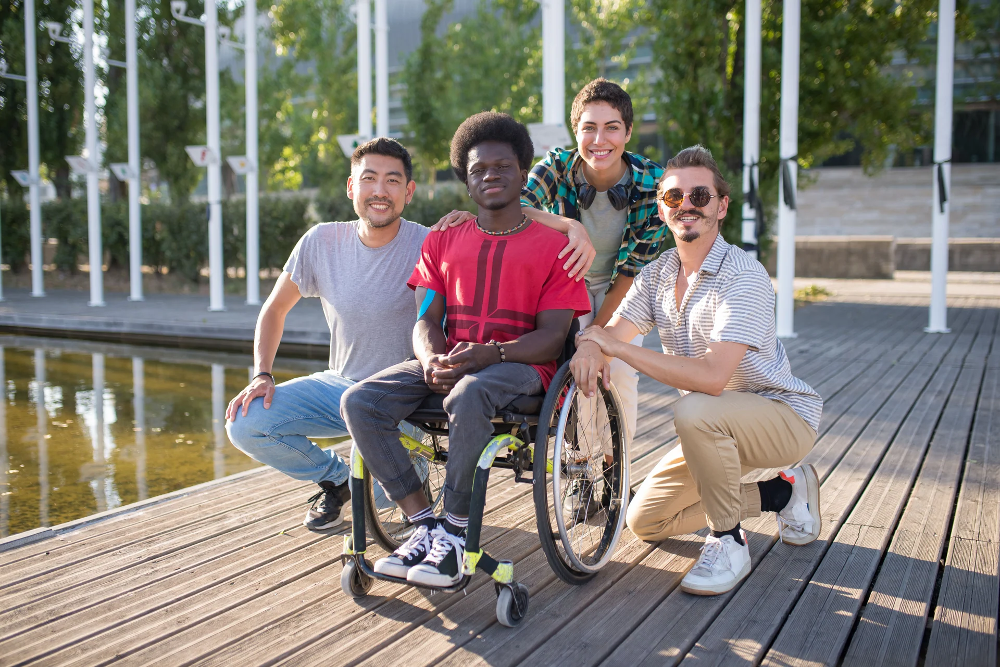
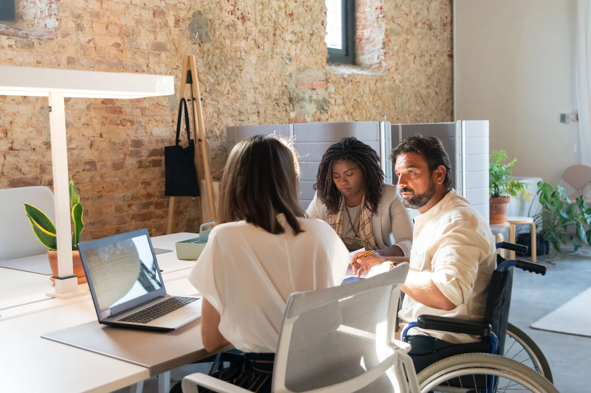
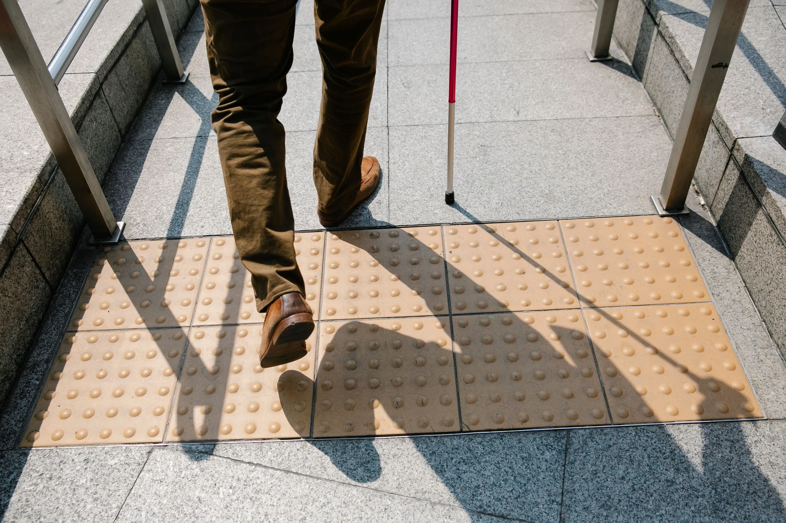
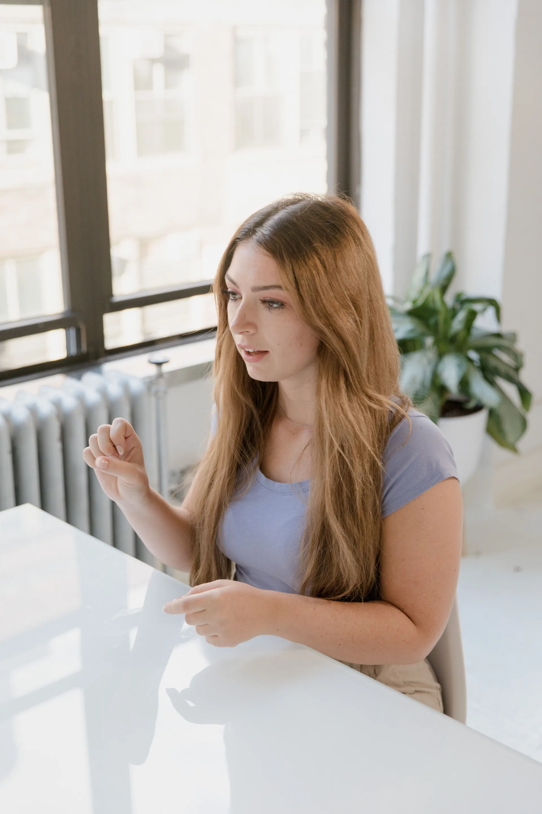
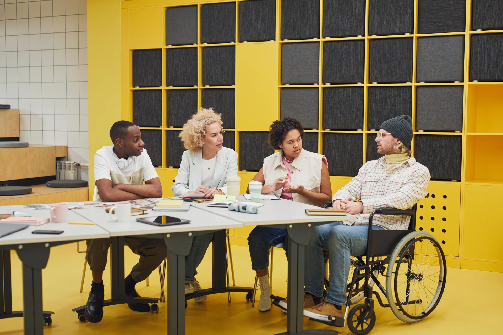

Intendencia de Lavalleja
Comisión asesora
Para dar forma a la nueva Área de Discapacidad, Inclusión y Accesibilidad.
Dirección General de Servicios Sociales
Deslizá o usá las flechas ← →

El mandato
Dar forma al Área
La comisión reunirá a personas con discapacidad, sus organizaciones y equipos públicos para proponer cómo funcionará el Área de la Dirección General de Servicios Sociales.
- Escuchar
- Conocer las barreras y las prioridades.
- Articular
- Vincular equipos y localidades.
- Recomendar
- Elevar el diseño y las primeras acciones.

01 / 03 Líneas de trabajo
Dentro de la Intendencia
Incorporar la accesibilidad desde el diseño de obras, servicios, trámites y actividades departamentales.
Un ejemplo es revisar cómo se llega a un servicio, cómo se señaliza y cómo se explica.

02 / 03 Líneas de trabajo
Con la comunidad
Definir prioridades con personas con discapacidad y sus organizaciones, en diálogo con familias, centros educativos y redes comunitarias.
Un ejemplo es organizar consultas accesibles y devolver los acuerdos a quienes participaron.
03 / 03 Líneas de trabajo
En todo Lavalleja
Trabajar con municipios y localidades para que el diagnóstico incluya las necesidades de las zonas urbanas y rurales.
Un ejemplo es acordar con cada comunidad qué barreras atender primero.
Mapa de trabajo
¿Quiénes dan forma al Área?
Elegí una rama para desplegar sus aportes.
Gestión departamental
Obras, tránsito, cultura, turismo, deporte y servicios sociales, entre otras áreas.
Planificar y evaluar acciones con accesibilidad desde el inicio.
Personas y organizaciones
Identificar barreras y proponer soluciones con personas con discapacidad.
Recoger aportes de organizaciones, familias, centros educativos y clubes.
Municipios y localidades
Consultar a comunidades urbanas y rurales.
Considerar distancias, movilidad, conectividad y acceso a servicios.
Organismos nacionales
Vincular programas nacionales con las necesidades de Lavalleja.
Acordar referentes y canales de trabajo.
Hoja de ruta propuesta
De la escucha al plan
- 01
Integrar
Acordar la composición de la comisión, sus responsabilidades y la participación directa de personas con discapacidad.
- 02
Relevar
Escuchar a las localidades e identificar barreras en el transporte, los espacios, la información y los servicios.
- 03
Priorizar
Proponer acciones iniciales con responsables, metas e indicadores para seguir su avance.
- 04
Proponer
Elevar el diseño del Área con coordinación, un equipo interdisciplinario que incluya a personas con discapacidad, una mesa transversal y consulta permanente.
Resultado esperado Propuesta de funcionamiento del Área y bases para el Plan Departamental de Inclusión y Accesibilidad.

Primer acuerdo
¿Cómo vamos a escuchar?
Acordar quiénes integrarán la comisión y cómo se recogerán los aportes de las personas con discapacidad y de cada localidad.